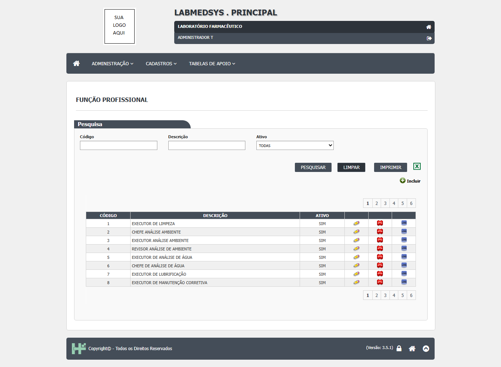
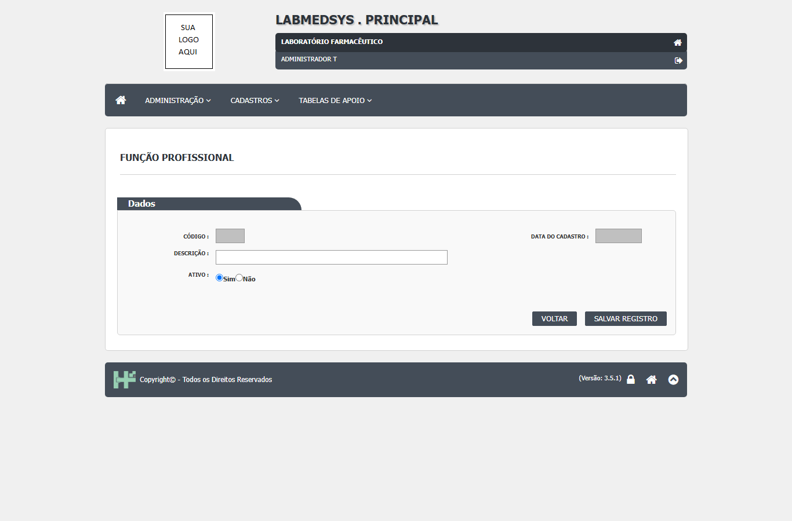
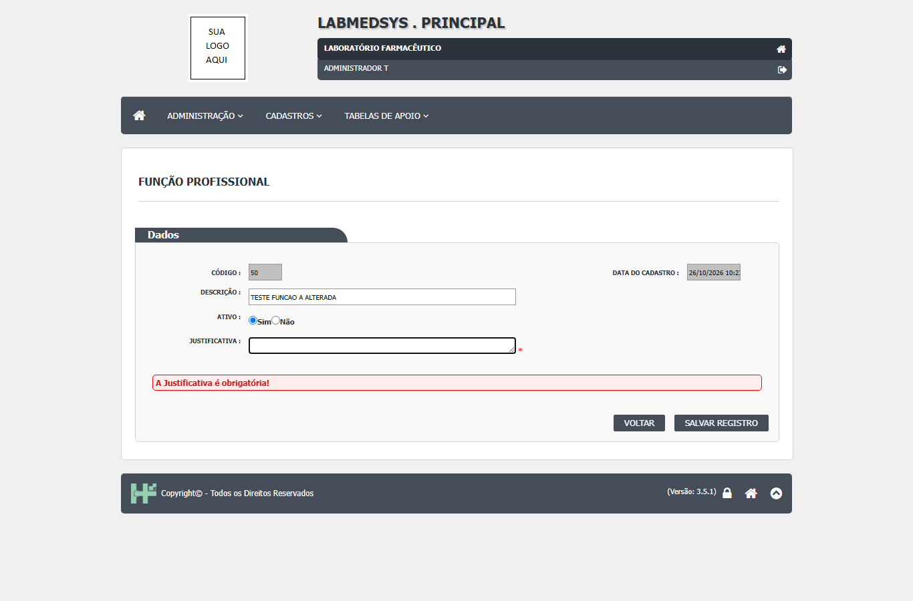
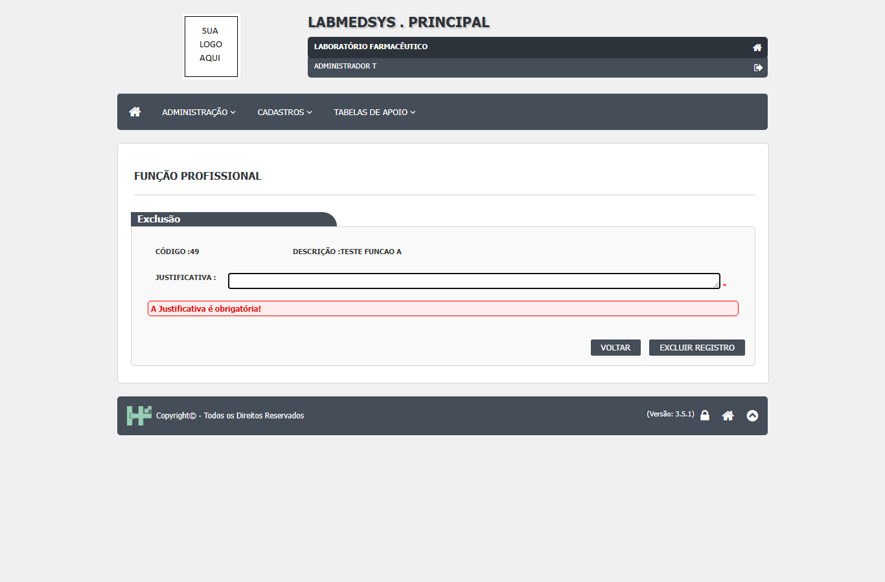
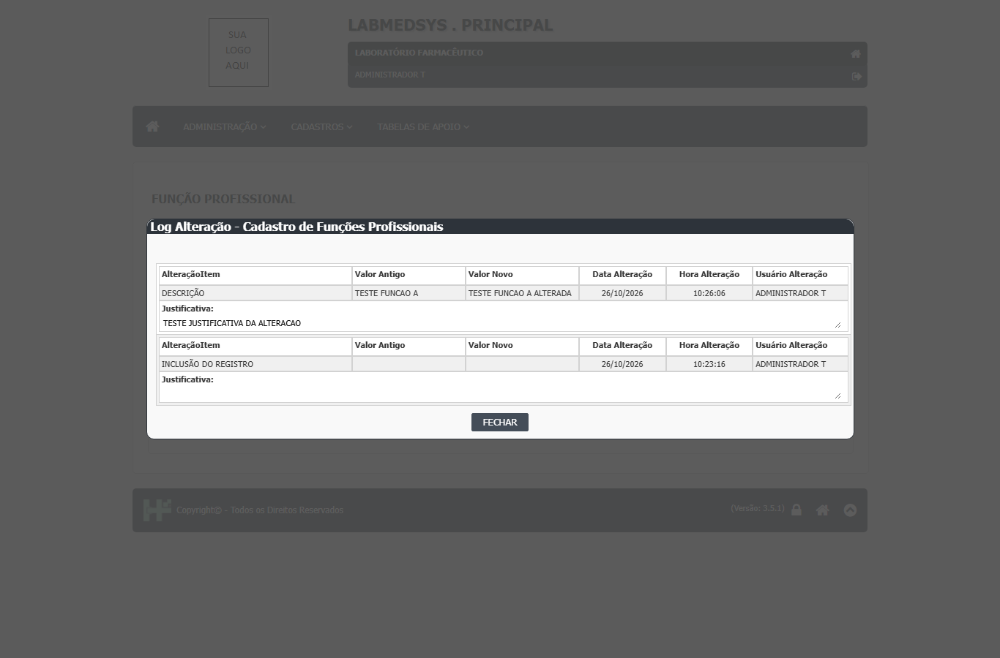
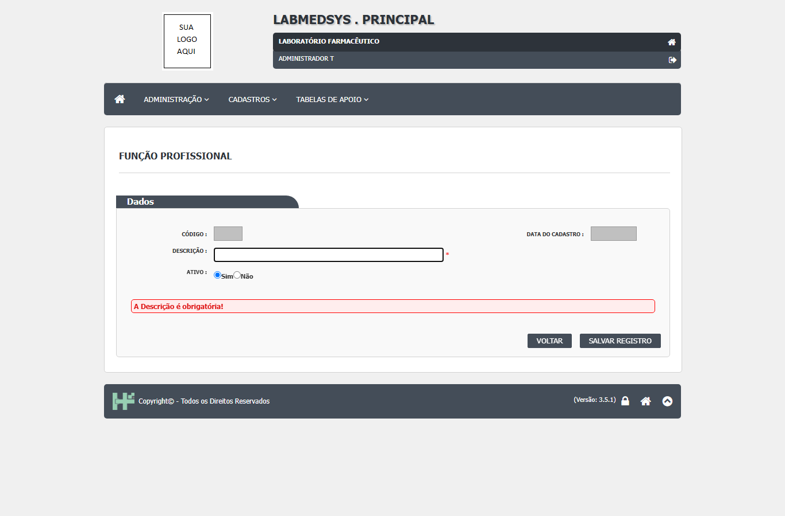
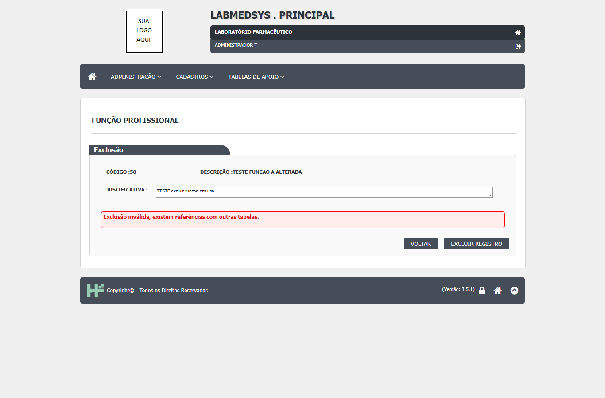

Para que serve
As Funções profissionais são os papéis de trabalho que uma pessoa exerce na fábrica (executor de limpeza, revisor de calibração, supervisor de almoxarifado, auditor, amostrador...). Os dados iniciais trazem 35 funções, entre elas "Autorizar início de produção" e "Cancelar solicitação para produção". Cada profissional pode ter várias funções, escolhidas na tela Profissional. Quem usa a tela é o administrador do sistema, com a Garantia da Qualidade e os responsáveis de cada área, que definem quem executa e quem revisa cada registro (leitura da área, a validar). Os outros módulos leem as funções para decidir quem aparece nas listas de executores, revisores e auditores.
Quem usa e em que etapa do processo
Quem usa
- O administrador do sistema, com a Garantia da Qualidade e os responsáveis de cada área, que definem quem executa e quem revisa cada registro (leitura da área, a validar).
- Os módulos que registram limpeza, calibração, manutenção e qualificação leem as funções para decidir quem aparece nas listas de executores e revisores; a lista de auditores é oferecida aos outros módulos pela API do Principal.
- Quem pode abrir, incluir, alterar, excluir, imprimir e ver o histórico está em "Quem pode usar (permissões)", mais abaixo.
Em que etapa do processo entra (tela 7 do menu Administração, módulo Principal)
- Pelo menu, com a lista vazia; é preciso clicar em Pesquisar.
- A função precisa existir e estar ativa antes de ser marcada no cadastro do profissional.
O que acontece depois (para onde o trabalho segue)
- Incluir grava a função e o histórico "INCLUSÃO DO REGISTRO" com a justificativa; mostra "Inclusão realizada com sucesso!" e volta à lista ao clicar OK.
- Alterar grava a descrição e a situação e escreve o histórico com a justificativa.
- Excluir marca a função como excluída (lixeira), se nenhuma outra tabela a usa, e escreve "EXCLUSÃO DO REGISTRO" com a justificativa.
- O próximo passo é dar a função às pessoas na tela Profissional e, quando for o caso, configurar quem executa e revisa cada tipo de registro no módulo Produção.
Fonte: Resumo da tela e fluxo da tela (leitura do código e dos testes). O que for leitura da área precisa ser validado com a área.
Antes de começar (o que precisa existir)
| Precisa existir | Para quê | Onde se cadastra |
|---|---|---|
| A lista dos papéis da fábrica e a decisão de quem precisa de cada um, definida com a Garantia da Qualidade | É o conteúdo do cadastro | Decisão da área (ponto para validar quem aprova a lista) |
| Permissão para a tela Funções profissionais no seu perfil | Para abrir a tela e ver Incluir, Editar, Excluir e Log | Menu Administração › Perfil |
A função precisa existir e estar ativa antes de ser marcada no cadastro do profissional (tela Profissional).
Passo a passo
Situação das imagens (14/11/2026): imagens reaproveitadas dos testes de 26/10/2026 (rodada 3), cada uma conferida contra o texto. Sem imagem: mensagem de sucesso da inclusão e da alteração (a tela volta à lista sem ela nas capturas), inativar função, exclusão concluída, imprimir e Excel.
Consultar a lista
- No menu, abra Funções profissionais. A tela mostra o quadro "Pesquisa". Clique em PESQUISAR (funcao_profissional_lst.aspx.cs:36-41).
- Filtros: Código (até 4 dígitos), Descrição (parte do nome, até 255 caracteres) e Ativo (Todas, Sim, Não). Sem resultado: "A pesquisa não retornou nenhum resultado.".
- A lista mostra Código, Descrição e Ativo, com os ícones Editar, Excluir e LOG, oito linhas por página. IMPRIMIR e o ícone do Excel aparecem depois de uma pesquisa com resultado.

Figura 1: lista de Função Profissional: filtros Código, Descrição e Ativo, botões PESQUISAR, LIMPAR, IMPRIMIR e Excel, a grade com os ícones lápis, X vermelho e LOG e seis páginas.
Criar uma função
- Clique em Incluir. O Código é gerado pelo sistema (campo travado), assim como a Data do Cadastro. Informe a Descrição (obrigatória, até 255; o sistema grava em maiúsculas) e deixe Ativo: Sim. O formulário de inclusão não tem campo de justificativa (ele só aparece na alteração e na exclusão).

Figura 2: formulário de inclusão: Código e Data do Cadastro travados, Descrição, Ativo (Sim marcado) e os botões VOLTAR e SALVAR REGISTRO; não há campo de justificativa.
- Clique em SALVAR REGISTRO e confirme ("Confirma a inclusão do item?"). O sistema não confere se já existe outra função com a mesma descrição (veja os cuidados).
Alterar uma função
- Na lista, clique em Editar. Altere a descrição ou a situação e preencha a Justificativa (obrigatória). Salve e confirme. Cuidado com o nome: algumas regras reconhecem uma função pelo nome (por exemplo "AUDITOR"); trocar o nome pode tirar pessoas de listas de outros módulos (dalAtividade.cs:104-113). Uma função inativa abre travada; só a situação e a justificativa podem ser mudadas.

Figura 3: formulário de alteração da função 50: Código travado, Descrição "TESTE FUNCAO A ALTERADA", campo Justificativa vazio e a faixa vermelha "A Justificativa é obrigatória!" depois de salvar sem justificativa.
Excluir uma função
- Na lista, clique no X vermelho. A tela mostra o código e a descrição e pede a Justificativa; clique em EXCLUIR REGISTRO e confirme ("Confirma a exclusão do item?"). Sem justificativa, a tela marca a falta com a faixa "A Justificativa é obrigatória!".

Figura 4: tela de exclusão da função 49: Código e Descrição, campo Justificativa vazio, faixa "A Justificativa é obrigatória!" e os botões VOLTAR e EXCLUIR REGISTRO.
Ver o histórico
- Na lista, clique no ícone LOG. Abre a janela "Log Alteração - Cadastro de Funções Profissionais" com o item alterado, valor antigo e novo, data, hora, usuário e a linha Justificativa.

Figura 5: histórico de uma função: "DESCRIÇÃO" de "TESTE FUNCAO A" para "TESTE FUNCAO A ALTERADA" (com a justificativa visível) e "INCLUSÃO DO REGISTRO" (justificativa vazia).
O que acontece ao confirmar ou salvar
- Incluir: grava a função e o histórico "INCLUSÃO DO REGISTRO" (funcao_profissional_ed.aspx.cs:149-168 e 219-224).
- Alterar: grava a descrição e a situação e escreve o histórico com a justificativa; o texto da justificativa é posto em maiúsculas, cortado em 255 caracteres e com apóstrofo duplicado antes de ser guardado (bllFuncaoProfissional.cs:46-76; funcao_profissional_ed.aspx.cs:134-135).
- Excluir: marca a função como excluída (lixeira), se nenhuma outra tabela a usa, e escreve "EXCLUSÃO DO REGISTRO" (bllFuncaoProfissional.cs:122-149).
- Imprimir e Excel: abrem o "RELATÓRIO DE FUNÇÕES DE PROFISSIONAIS" e não gravam nada.
O que o sistema recusa
- "A Descrição é obrigatória!" (descrição em branco; aparece depois do SIM da confirmação) e "A Situação é obrigatória!".

Figura 6: salvar a inclusão sem Descrição: faixa vermelha "A Descrição é obrigatória!" e o campo Descrição marcado.
- "A Justificativa é obrigatória!" ao alterar ou excluir sem justificativa (Figuras 3 e 4). Em teste, o aviso apareceu só depois da pergunta de confirmação.
- "Exclusão inválida, existem referências com outras tabelas." quando alguma pessoa ou configuração usa a função; a mensagem não diz qual (DV-PRI-011).

Figura 7: exclusão da função 50, que estava ligada a um profissional, com justificativa preenchida: faixa vermelha "Exclusão inválida, existem referências com outras tabelas.".
- Falha de banco: "Erro na inclusão / alteração / Exclusão / consulta da Função Profissional.", com "Detalhe do erro (+)".
Quem pode usar (permissões)
- A tela usa a função 92 (Funções profissionais) (funcao_profissional_lst.aspx.cs:20; funcao_profissional_ed.aspx.cs:15). A coluna Excluir segue a permissão de excluir; Editar e Log seguem as permissões de alterar e de consultar log; Imprimir e Excel aparecem sempre depois de pesquisar com resultado, sem conferir permissão (funcao_profissional_lst.aspx.cs:130-131).
- Pelo código, lista e formulário levam ao acesso negado quem não tem a função; o relatório (
funcao_profissional_rel) não confere permissão e recebe os filtros pelo endereço. Nenhum teste de acesso por endereço incluiu esta tela (a confirmar). - Quem cadastra uma função com poder de decisão (por exemplo "Autorizar início de produção") não precisa de aprovação de outra pessoa. Ponto para validar com a área.
Cuidados e falhas conhecidas
- Duas funções com a mesma descrição são aceitas (DV-PRI-028, Baixa): no teste, "TESTE FUNCAO A" ficou duplicada (códigos 49 e 50), o que pode confundir as listas de executores e revisores.
Figura 8: última página da lista com duas funções "TESTE FUNCAO A" (códigos 49 e 50), as duas ativas.
- Justificativa no histórico (DV-PRI-027): o registro de defeitos diz que a linha "Justificativa:" sai em branco nesta tela; a captura da Figura 5 mostra o texto preenchido. Ponto para reconferir.
- Exclusão de função em uso recusa com mensagem genérica (DV-PRI-011).
- Inativar uma função em uso gravou sem aviso; a função inativa continua na lista do profissional e some da busca para novas escolhas (CT-PRI-093).
- Nome que vale como chave: alterar "AUDITOR" muda quem aparece como auditor em outros módulos, sem aviso (pelo código; a confirmar).
- Nenhum campo liga a função a aprovar ou autorizar algo: a função é só um nome (confirma DV-EST-076 a partir do Principal, CT-PRI-ADM-29).
Ícones e botões da lista
| Ícone ou botão | O que faz | Quando aparece |
|---|---|---|
| PESQUISAR | Lista as funções pelos filtros | Sempre |
| LIMPAR | Esvazia filtros e lista | Sempre |
| Incluir (ícone de mais) | Abre o formulário em branco | Para quem tem Incluir |
| Lápis (Editar) | Abre a função para alterar (com Justificativa) | Em cada linha, para quem tem Alterar |
| X vermelho (Excluir) | Abre a tela de exclusão com Justificativa | Em cada linha, para quem tem Excluir |
| LOG | Abre o histórico da função | Em cada linha, para quem tem Consultar log |
| IMPRIMIR e Excel | Geram o "RELATÓRIO DE FUNÇÕES DE PROFISSIONAIS" | Depois de uma pesquisa com resultado |
Campos da tela
Caminhos das fontes na seção Resumo da tela. "Sim (servidor)" quando o servidor também recusa; "Só na tela" quando só o navegador confere.
| Campo na tela | Tipo | Obrigatório | Regra, limite ou valores possíveis | Fonte |
|---|---|---|---|---|
| Lista: Código | Texto de até 4 | Não | Código exato (a consulta cola o texto digitado) | funcao_profissional_lst.aspx:43-44; dalFuncaoProfissional.cs:215-218 |
| Lista: Descrição | Texto de até 255 | Não | Procura dentro da descrição | funcao_profissional_lst.aspx:48-49; dalFuncaoProfissional.cs:220-223 |
| Lista: Ativo | Lista | Não | Todas, Sim, Não | funcao_profissional_lst.aspx:52-56; dalFuncaoProfissional.cs:225-228 |
| Código (formulário) | Texto travado | Não se aplica | Número gerado pelo sistema | funcao_profissional_ed.aspx:43; funcao_profissional_ed.aspx.cs:40 e 50 |
| Data do cadastro | Texto travado | Não se aplica | Data e hora da criação | funcao_profissional_ed.aspx:47; funcao_profissional_ed.aspx.cs:53 |
| Descrição | Texto de até 255 | Sim | "A Descrição é obrigatória!"; gravada em maiúsculas e sem espaços repetidos | funcao_profissional_ed.aspx:54-55; funcao_profissional_ed.aspx.cs:139 |
| Ativo | Sim ou Não | Sim | "A Situação é obrigatória!"; na inclusão vem Sim | funcao_profissional_ed.aspx:61-65 |
| Justificativa | Texto de várias linhas, 255 | Sim, inclusive na inclusão | "A Justificativa é obrigatória!"; cortada em 255 e com o apóstrofo duplicado antes de gravar | funcao_profissional_ed.aspx:70-75; funcao_profissional_ed.aspx.cs:134-135 |
| Exclusão: Justificativa | Texto | Sim | Obrigatória | funcao_profissional_lst.aspx:151; funcao_profissional_lst.aspx.cs:261-265 e 284 |
Botões e ações
| Botão ou ação | Quando aparece | O que faz | Para onde leva | Fonte |
|---|---|---|---|---|
| Pesquisar | Sempre, na lista | Lista as funções conforme os filtros | Não muda | funcao_profissional_lst.aspx.cs:36-41 |
| Limpar | Sempre, na lista | Esvazia filtros e lista | Não muda | funcao_profissional_lst.aspx.cs:43-62 |
| Incluir (ícone +) | Conforme a permissão de incluir | Abre o formulário em branco | Não muda | funcao_profissional_lst.aspx.cs:48-51 |
| Imprimir e Excel | Depois de pesquisar com resultado, sem conferir a permissão de imprimir | Abre o relatório | Não muda | funcao_profissional_lst.aspx.cs:64-102 e 130-131 |
| Editar (lápis) | Em toda linha, conforme a permissão de alterar | Abre o formulário | Não muda | funcao_profissional_lst.aspx.cs:178-180 |
| Excluir (X) | Em toda linha, conforme a permissão de excluir | Abre o quadro de exclusão | Não muda | funcao_profissional_lst.aspx.cs:113 e 165-177 |
| Log (ícone) | Em toda linha, conforme a permissão de histórico | Abre o histórico | Não muda | funcao_profissional_lst.aspx.cs:181-194 |
| EXCLUIR REGISTRO | No quadro de exclusão | Pede confirmação e exclui | Lista | funcao_profissional_lst.aspx.cs:261-330 |
| SALVAR REGISTRO | No formulário | Pede confirmação e grava | Lista, depois do OK | funcao_profissional_ed.aspx.cs:96-115 e 117-215 |
| VOLTAR | Sempre | Volta à lista (no formulário) ou ao menu de tabelas de apoio (na lista) | Lista ou menu | funcao_profissional_ed.aspx.cs:91-94; funcao_profissional_lst.aspx.cs:331-335 |
Mensagens do sistema
Nenhuma desta tela foi vista em teste.
| Mensagem (texto exato do código) | Quando aparece | Fonte |
|---|---|---|
| A pesquisa não retornou nenhum resultado. | Pesquisa sem resultado | funcao_profissional_lst.aspx.cs:152 |
| A Descrição é obrigatória! / A Situação é obrigatória! / A Justificativa é obrigatória! | Campo em branco | funcao_profissional_ed.aspx:55, 65 e 74 |
| Confirma a inclusão do item? / Confirma a alteração do item? / Confirma a exclusão do item? | Ao clicar SALVAR REGISTRO ou EXCLUIR REGISTRO | funcao_profissional_ed.aspx.cs:260 e 264; funcao_profissional_lst.aspx.cs:403 |
| Inclusão realizada com sucesso! / Alteração realizada com sucesso! | Depois de gravar | funcao_profissional_ed.aspx.cs:156 e 177 |
| Exclusão realizada com sucesso! | Depois de excluir | funcao_profissional_lst.aspx.cs:305 |
| Exclusão inválida, existem referências com outras tabelas. | Função em uso | bllFuncaoProfissional.cs:130 |
| Esse código já está cadastrado. | Verificação de código na alteração; nunca dispara (compara o registro com ele mesmo) | bllFuncaoProfissional.cs:54; dalFuncaoProfissional.cs:326-361 |
| Erro na inclusão / alteração / Exclusão / consulta da Função Profissional. | Falha de banco, com "Detalhe do erro (+)" | bllFuncaoProfissional.cs:40, 73, 87 e 146 |
| Erro ao efetuar ao consultar registro! | Falha ao abrir o formulário | funcao_profissional_ed.aspx.cs:69 |
| Não existe log de alteração para este registro. | Histórico vazio | funcao_profissional_lst.aspx:186 |
Quem pode fazer o quê
Ainda não levantado para esta tela
O quadro "Quem pode fazer o quê" é preenchido a partir de testes de tela por perfil (nível, área e etapa do registro), nunca por suposição. Esta tela ainda não passou por esse levantamento.